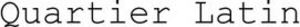

Trade Mark Journal No.2026/003 16 January 2026
WO0000001893443 (5,9,10,42,44)
Office of origin: France
Date of International Registration:6 November 2025
Date of designation in the UK:
6 November 2025

- Class 5
- Dietary foods for medical use; dietary foods for veterinary use; baby foods; precious metal alloys for dental use; dressing materials; food supplements; sanitary pants; medicated toothpastes; disinfectants; fungicides; medicinal herbs; herbicides; dental impression materials; dental filling materials; parasiticides; chemical preparations for medical use; chemical preparations for pharmaceutical use; bath preparations for medical use; antibacterial hand washing products; hygienic products for medical use; pharmaceutical products; products for destroying harmful animals; veterinary products; disinfectant soaps; medicated soaps; sanitary towels; medicated shampoos; medicinal herbal teas.
- Class 9
- Cinematographic apparatus; Image recording apparatus; image reproduction apparatus; image transmission apparatus; weighing apparatus and instruments; signaling apparatus and instruments; checking (control) apparatus and instruments; geodetic apparatus and instruments; nautical apparatus and instruments; optical apparatus and instruments; photographic apparatus and instruments; teaching apparatus and instruments; Scientific apparatus and instruments; apparatus for sound reproduction; apparatus for sound transmission; apparatus for non-medical diagnosis; sound recording devices; electric batteries; batteries for electronic cigarettes; charging stations for electric vehicles; cash registers; memory cards or microprocessor cards; virtual reality headsets; diving suits; detectors; personal accident protection devices; data processing equipment; fire extinguishers; electrical wires; diving gloves; measuring instruments and devices; e-readers; game software; software (recorded programs); 3D glasses; calculating machines; diving masks; mechanisms for prepayment devices; computers; smartphones; computer peripherals; downloadable electronic wallets; electrical relays; laptop bags; digital recording media; electronic tablets; protective clothing against accidents, radiation, and fire.
- Class 10
- Massage devices; Surgical devices and instruments; dental devices and instruments; medical devices and instruments; veterinary devices and instruments; orthopedic items; stockings for varicose veins; basins for medical use; hygienic basins; baby bottles; orthopedic shoes; surgical cutlery; walking frames for disabled persons; artificial teeth; surgical sheets; chairs for medical or dental use; artificial implants; suture material; artificial limbs; special furniture for medical use; prostheses; baby bottle teats; special clothing for operating rooms; artificial eyes.
- Class 42
- Computer systems analysis; Architecture; energy audits; authentication of works of art; software design; computer systems design; computer design for third parties; conducting technical project studies; information technology consulting; technical inspection of motor vehicles; interior decoration; software development; computer development; software development (design); technical evaluations concerning design (engineering work); server hosting; cloud computing; software installation; software rental; software as a service (SaaS); software maintenance; software updates; document scanning; computer programming; research and development of new products for third parties; scientific research; technological research; graphic design services; consulting services for the design and development of computer hardware; electronic data storage; industrial design.
- Class 44
- Medical assistance; Cosmetic surgery; gardening; nursing homes; agricultural, horticultural, and forestry services; landscape gardening services; convalescent home services; rest home services; alternative medicine services; beauty salon services; hairdressing salon services; optician services; hospital services; medical services; skin care services (hygiene and beauty care); veterinary services; animal grooming.
QUARTIER LATIN
Representative: Madame AVANES-ACOPIAN Mélina CABINET HAUTIER, 20 Rue de la Liberté, F-06000 Nice, FRANCE